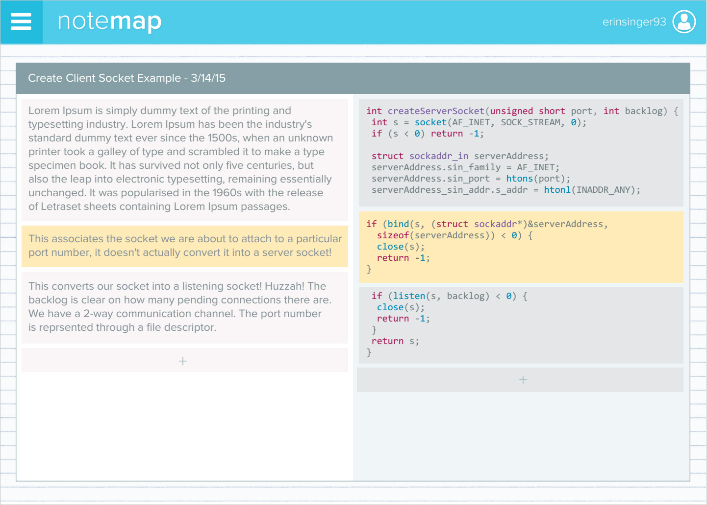

NoteMap
a programmer's favorite notebook
13
In-depth user tests
126
Languages supported
1
Project fair award
What is it?
NoteMap is a website that helps you take code-related notes. It allows you to take down snippets of code as well as regular notes and link them together, so you don't have to forget what that one confusing line does ever again. It was a class project for the senior project course at Stanford.
My role
NoteMap was a team effort among two friends and myself. One team member focused primarily on the design and some of the front-end. Another focused on most of the Javascript for the note and code editors. I focused mostly on the back-end and on various pieces on the front-end. In addition, we all worked together to perform needfinding, perform user interviews, create sketches, and conduct user tests.
The Process

This is a medium-fidelity mockup we created after combining some of our favorite sketches. We received great feedback on it regarding color choice, emotion, and usability.

{kind=link}
{kind=link}
{kind=link}
{kind=link}
{kind=link}